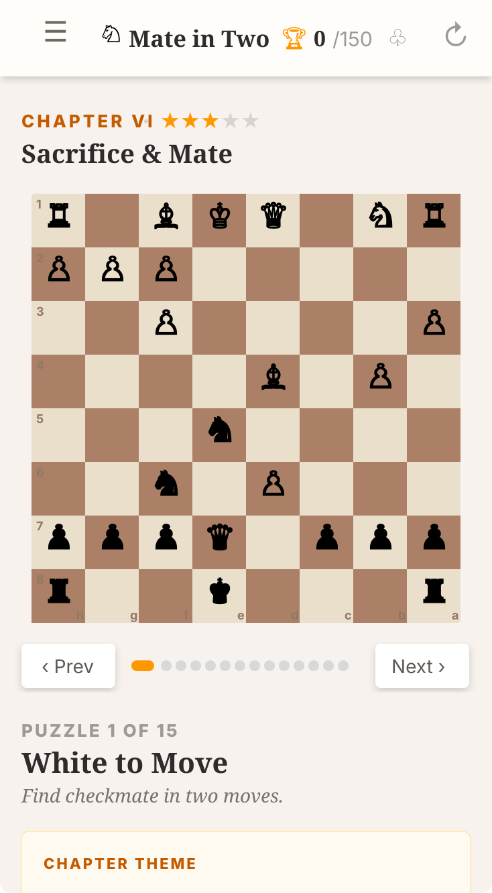

Kern Labs iOS app
Mate in 2
A calm chess puzzle app for practicing forcing two-move checkmates. Calculate the first move, anticipate the opponent reply, and finish the mating sequence with clarity.
- Two-move mate sequences for deeper calculation
- Step-by-step move flow for deliberate practice
- Minimal iOS-style presentation with quick sessions
